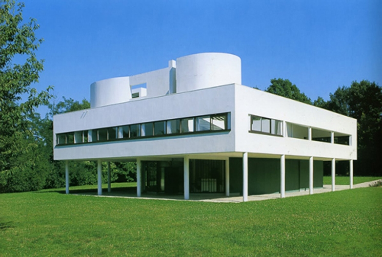

Antigua Grecia y Roma (desde el siglo V a. C. hasta el siglo V d. C.).
Usa la simetría, la proporción geométrica y las columnas (con los órdenes dórico, jónico y corintio).
Ejemplo: El Partenón en Atenas.

Europa occidental durante la Baja Edad Media (siglos XII al XVI).
Busca la altura y la luz. Destaca por el uso de arcos apuntados u ojivales, contrafuertes externos y grandes ventanales con vitrales coloridos.
Ejemplo: La Catedral de Notre Dame en París.

Italia (siglos XV y XVI).
Recupera los valores de la antigüedad clásica. Prioriza la proporción matemática, la armonía, las cúpulas centrales y las fachadas simétricas.
Ejemplo: La Basílica de San Pedro en el Vaticano.
Europa (siglos XVII y XVIII).
Busca el dramatismo, el movimiento y la teatralidad. Utiliza líneas curvas, decoración recargada y fuertes contrastes de luz y sombra.
Ejemplo: El Palacio de Versalles en Francia.
Fines del siglo XIX y siglo XX.
Prioriza la función sobre el ornamento. Utiliza líneas limpias, espacios abiertos y materiales industriales como el hormigón armado, el acero y el vidrio.
Ejemplo: La Villa Savoye de Le Corbusier.
